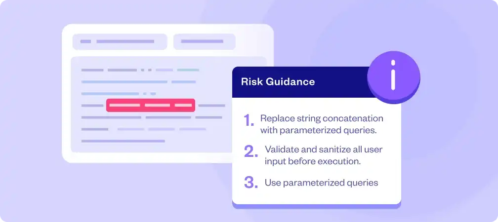
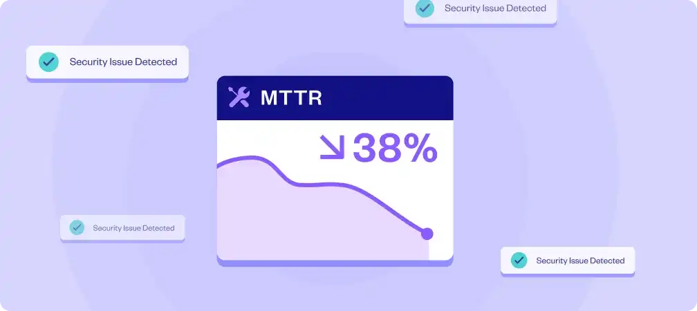
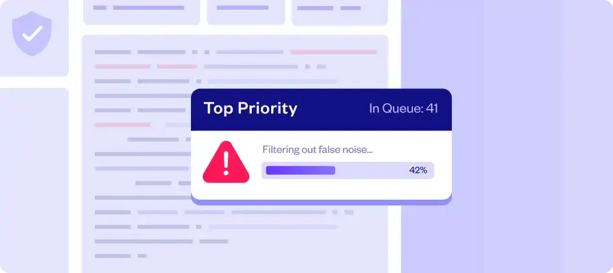
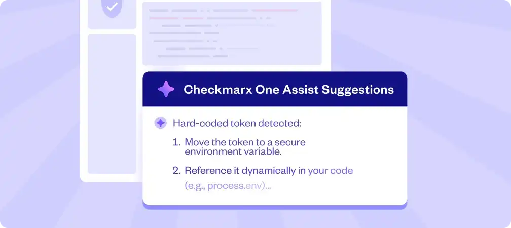
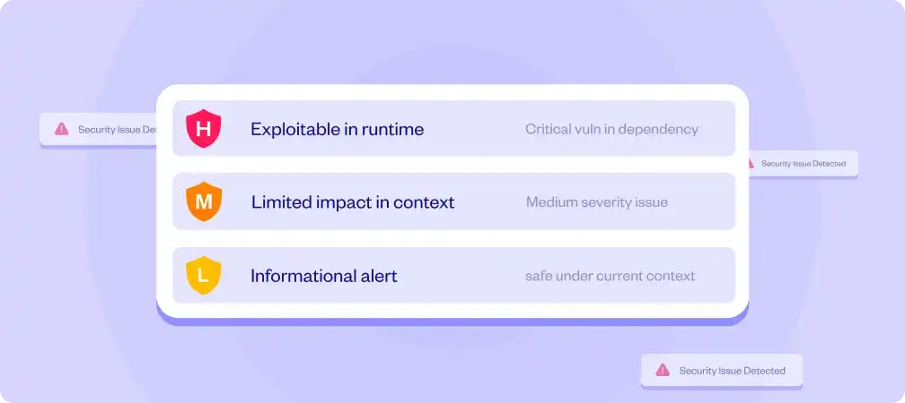
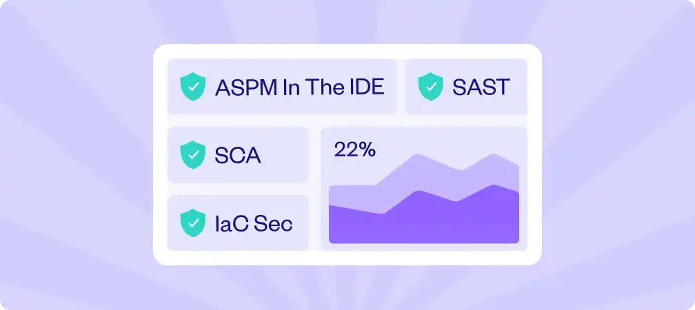
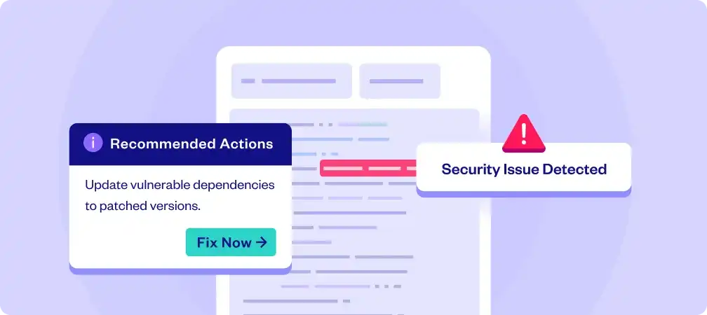
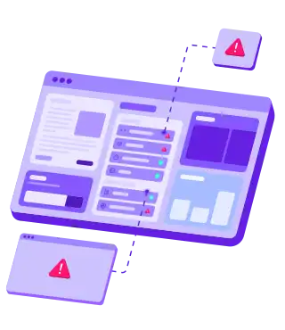
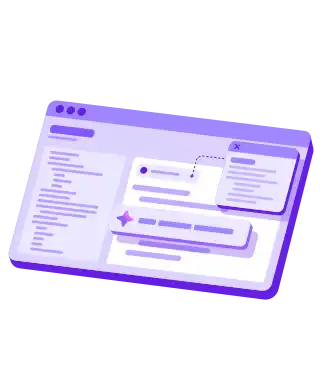
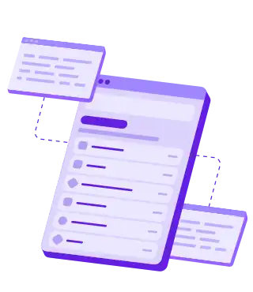

请访问原文链接：Checkmarx SAST 9.5 for Windows - 源代码扫描 (静态应用安全测试) 查看最新版。原创作品，转载请保留出处。
作者主页：sysin.org
Checkmarx
Agentic 应用安全领域的领导者
“#1 in Agentic Application Security”
通过 Agentic AI 统一 SAST、SCA、IaC 和 ASPM，更快地预防与修复风险 —— 从代码到云端。
每月扫描超过 8000 亿行代码
- Apple
- Salesforce
- Siemens
- Walmart
- CITI
- VISA
- Carlsberg
- Elevance-Health
- Orange
- Airbus-Group
- Novartis
- GE
- Sainsburys
- PWC
- The Weather Company
- CGI
- Adidas
- SAP
Checkmarx One - 面向 AI 时代的统一应用安全平台
覆盖人类代码与 AI 生成代码、供应链以及运行时风险的完整 AppSec 能力。面向 Agentic 开发生命周期（ADLC）的实时修复。
面向所有人的 AppSec 清晰可见性
从代码扫描到应用安全测试与监控，再到漏洞修复，Checkmarx One 帮助安全团队和开发者专注于最具可利用性、影响最大的风险，从而优先修复最关键的问题。
AppSec
💡 问题
安全团队被无尽的扫描结果和误报淹没。
✅ 更少噪音，更高信号
–> 按风险而非数量优先排序
Checkmarx One ASPM 跨引擎关联分析结果 (sysin)，筛选出可被利用且可采取行动的问题，使 AppSec 团队能够把精力集中在最重要的地方。
💡 问题
AppSec 发现的问题常常堆积在待办列表中，因为缺乏开发者上下文或理解。
✅ 修复更具可理解性

–> 在 IDE 中直接解释风险
Checkmarx One Assist 为开发者提供清晰的原因说明和修复指导，减少阻力并加速安全代码的采用。
💡 问题
关键漏洞由于责任不清或知识不足而长期未修复。
✅ 更快交付速度

–> 上下文感知 AI 修复
通过在 IDE 内提供修复指导并提前暴露优先问题，Checkmarx One 帮助 AppSec 团队降低平均修复时间（MTTR），同时不影响开发速度。
Developer
💡 问题
安全告警充斥开发者待办列表，却没有明确哪些真正重要。
✅ 明确需要修复的内容

–> IDE 中的 ASPM 优先级排序
Checkmarx One 仅展示会影响应用的漏洞，并按真实风险排序 (sysin)，让你保持专注，避免告警疲劳。
💡 问题
即使理解了问题，也很难知道如何安全修复。
✅ 自信修复
–> Agentic AI 修复指导
Checkmarx One Assist 在 IDE 中提供安全代码建议、上下文与重构帮助，让你更快、更安全地发现并修复问题。
💡 问题
在工具之间切换并在开发流程之外追踪问题会打断节奏。
✅ 保持开发流畅

–> 安全驻留在你的 IDE 中
Checkmarx One Assist 将安全能力集成到开发流程中，使开发者无需切换上下文即可编写、审查和修复代码。
CISO
💡 问题
难以判断哪些漏洞真正可被利用，哪些只是噪音。
✅ 可执行的发现结果

–> 上下文驱动的风险可视化
Checkmarx One 关联代码、依赖项和部署环境，突出真正可被利用的风险，使资源聚焦关键问题。
💡 问题
安全问题长期未解决，因为开发者将其视为阻碍或噪音。
✅ 赋能开发者

–> 开发者可信赖的 AI 指导
Checkmarx One Assist 将修复能力直接带入开发者 IDE，使安全成为工作流的一部分 (sysin)，而不是交接或冲突。
💡 问题
多个 AppSec 工具导致噪音、漏洞与碎片化流程，缺乏统一视图。
✅ 一个平台，全覆盖

–> 集中式 AppSec 与 ASPM
Checkmarx One 将 SAST、SCA、Secrets、IaC、ASPM 等整合到单一平台，提供全面安全态势并减少工具数量。
AI 原生 AppSec
优先处理真正重要的问题
随着 AI 重塑代码构建方式，分散的工具已无法跟上节奏，而攻击者正利用这一点。Checkmarx One 在单一平台中弥合 SDLC 与 ADLC 的差距，在风险上线之前将其阻断。

✅ AI 变化很快，风险更快
AI 扩大攻击面并以更快速度创建攻击路径。要跟上节奏，需要跨 ADLC 的实时可见性。

✅ 安全不应破坏构建流程
当安全能力在开发者工作环境中完成对接，问题可以立即修复——无需切换上下文、无延迟、无借口。

✅ 孤立工具会隐藏风险
分散的 AppSec 工具会掩盖真实风险。在没有统一视图的情况下，漏洞被忽视，暴露面扩大，团队只能追逐噪音。
系统要求
服务端系统：要求以下系统
- Windows Server 2016 中文版、英文版下载 (2026 年 8 月更新)
- Windows Server 2019 中文版、英文版下载 (2026 年 8 月更新)
- Windows Server 2022 中文版、英文版下载 (2026 年 7 月更新)
- Windows Server 2025 中文版、英文版下载 (2026 年 7 月更新)
客户端系统：仅 x64
- Windows 10 version 22H2 中文版、英文版下载 (2025 年 10 月更新)
- Windows 11 26H1 | 25H2 | 24H2 中文版、英文版下载 (2026 年 7 月更新)
下载地址
Checkmarx SAST 9.5 for Windows
百度网盘链接：https://pan.baidu.com/s/1qngIl2VTPzBg31TIDmvzSQ?pwd= <专享>
相关产品：Gartner 应用程序安全测试 (AST) 魔力象限 2025
更多：HTTP 协议与安全

文章用于推荐和分享优秀的软件产品及其相关技术，所有软件默认提供官方原版（免费版或试用版），免费分享。对于部分产品笔者加入了自己的理解和分析，方便学习和研究使用。任何内容若侵犯了您的版权，请联系作者删除。如果您喜欢这篇文章或者觉得它对您有所帮助，或者发现有不当之处，欢迎您发表评论，也欢迎您分享这个网站，或者赞赏一下作者，谢谢！
 支付宝赞赏
支付宝赞赏  微信赞赏
微信赞赏赞赏一下
敬请注册！点击 “登录” - “用户注册”（已知不支持 21.cn/189.cn 邮箱）。 请勿使用联合登录（已关闭）。